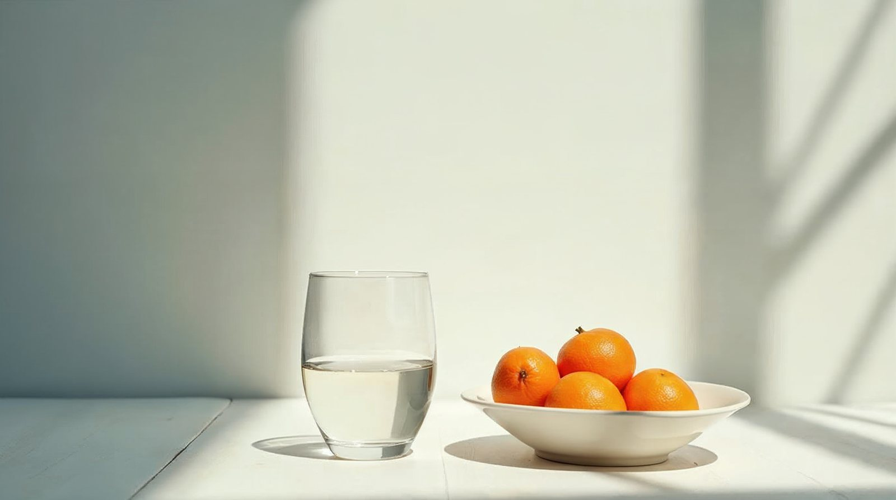
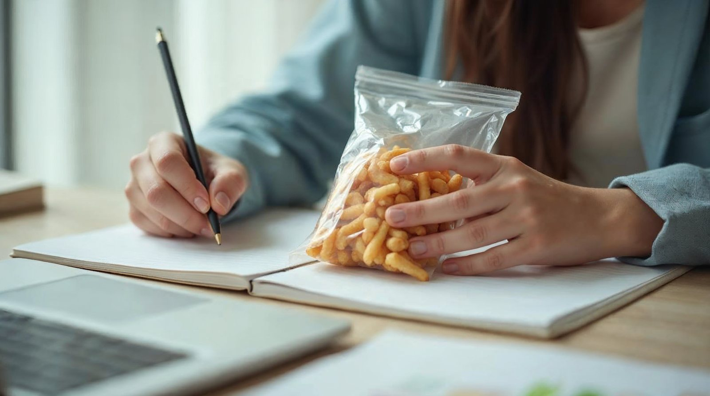
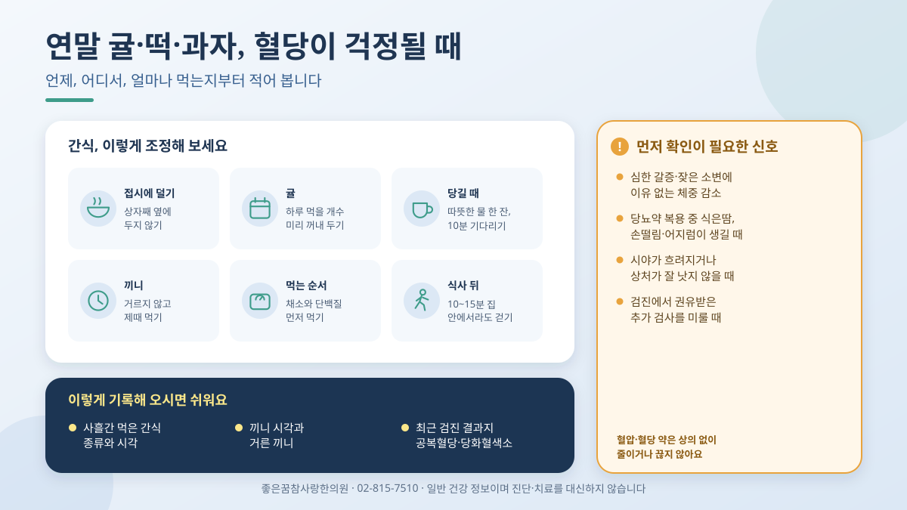

이종호 한의사 감수좋은꿈참사랑한의원 대표원장 (한의사 면허번호 19769)발행 2026-11-25 · 수정 2026-11-26
이 글의 차례
- 왜 겨울에는 간식이 늘기 쉬울까요
- 공복혈당과 당화혈색소는 무엇이 다른가요?
- 스스로 점검해 보는 목록
- 먼저 이렇게 여쭙니다
- 귤은 하루에 몇 개쯤이 적당할까요?
- 떡과 과자는 어떻게 먹으면 덜 부담스러울까요?
- 일상에서 먼저 해 볼 수 있는 것
- 간식을 두는 자리를 바꾸면 무엇이 달라지나요?
- 저녁에 단것이 당기는 것은 왜일까요?
- 식사 순서는 어떻게 하면 좋을까요?
- 추운 날에는 어떻게 움직이면 좋을까요?
- 간식이 당길 때 무엇으로 바꿔 볼 수 있을까요?
- 식사 뒤 졸음이 심한 날은 무엇을 살피나요?
- 검진에서 경계라는 말을 들었다면 무엇부터 할까요?
- 가족이 함께 바꾸려면 어떻게 하나요?
- 혼자 사는 분은 무엇을 더 챙기면 좋을까요?
- 연말 모임에서는 어떻게 하나요?
- 새해까지 이어 갈 작은 약속은 무엇이 좋을까요?
- 한의원에서 함께 살필 수 있는 경우
- 이렇게 기록해 오시면 상담이 쉬워집니다
- 이런 증상은 먼저 확인이 필요합니다
연말 간식이 걱정된다면 무엇을 끊을지보다 언제, 어디서, 얼마나 먹는지를 먼저 적어 보는 것이 출발점입니다. 거실 탁자에 귤 상자가 놓이고 사무실에는 떡과 과자가 돌기 시작하면, 한 번에 많이 먹지 않아도 하루 종일 조금씩 손이 갑니다. 검진에서 공복혈당이 조금 높다는 말을 들은 분들이 특히 이 시기를 걱정합니다.
진료실에서 간식 이야기를 꺼내면 "많이 먹은 건 아닌데요"라는 대답이 먼저 나옵니다. 실제로 한 번에 먹는 양은 귤 한두 개, 떡 한 조각, 과자 몇 개입니다. 그런데 그 한 번이 하루에 몇 번이었는지 세어 보면 다들 놀라십니다.
저는 간식을 나쁜 것으로 보지 않습니다. 겨울밤 귤 까먹는 즐거움, 연말에 나눠 먹는 떡 한 조각은 생활의 일부입니다. 다만 그 즐거움이 혈당 걱정으로 바뀌지 않도록, 먹는 방식을 조금 다듬어 보자는 것입니다. 끊는 것이 아니라 다듬는 것이라고 생각하면, 마음도 한결 가벼워지고 오래 이어 가기도 쉽습니다.
왜 겨울에는 간식이 늘기 쉬울까요
- 추위로 실내에 머무는 시간이 길어지면 먹을 것이 가까이에 있게 됩니다.
- 귤처럼 한 번에 여러 개 먹기 쉬운 과일은 양을 가늠하기 어렵습니다.
- 연말의 피로와 스트레스가 단것을 찾게 만들기도 합니다.
- 움직임이 줄어 같은 양을 먹어도 몸에 남는 것이 달라질 수 있습니다.
해가 일찍 지는 겨울에는 저녁 시간이 길게 느껴집니다. 텔레비전 앞에 앉아 있으면 손이 심심해 귤을 하나 까고, 또 하나 까게 됩니다. 귤은 껍질을 까는 재미가 있어 배가 불러도 손이 멈추지 않는 과일입니다.
떡은 작은 조각이라도 쌀을 뭉친 것이라 밥 몇 숟가락과 비슷한 양이 됩니다. 사무실에서 돌아다니는 떡을 오후에 하나씩 먹다 보면, 점심과 저녁 사이에 한 끼를 더 먹은 셈이 되기도 합니다.
공복혈당과 당화혈색소는 무엇이 다른가요?
공복혈당은 밤새 먹지 않은 아침에 잰 그 순간의 혈당입니다. 전날 저녁에 무엇을 먹었는지, 잠을 잘 잤는지에 따라 하루하루 달라질 수 있습니다.
당화혈색소는 지난 두세 달 동안의 혈당 흐름을 평균처럼 보여 주는 수치입니다. 하루 이틀 간식을 많이 먹었다고 크게 바뀌지 않지만, 몇 주 동안의 생활이 쌓이면 조금씩 움직입니다.
그래서 연말 몇 주 간식이 늘었다면 당장 수치보다 그 습관이 새해까지 이어지지 않도록 하는 것이 중요합니다. 검진 결과지에 두 수치가 모두 있다면 함께 가져와 주세요.
스스로 점검해 보는 목록
- 귤 상자나 과자 봉지가 손 닿는 곳에 늘 놓여 있다
- 하루에 먹은 귤 개수를 정확히 말하기 어렵다
- 점심과 저녁 사이에 떡이나 빵을 먹는 날이 많다
- 끼니를 거른 날 저녁에 단것이 더 당긴다
- 식사 뒤 한 시간쯤 지나면 졸음이 쏟아진다
- 하루에 걷는 시간이 이십 분이 안 된다
- 잠이 부족한 날 간식이 더 늘어난다
해당하는 항목이 많을수록 간식을 두는 자리와 먹는 때부터 바꿔 보시길 권합니다. 이 목록은 진단이 아니라 습관을 돌아보는 도구로 써 주세요. 한 달쯤 지나 같은 목록을 다시 체크해 보면 바뀐 습관이 눈에 보입니다.

먼저 이렇게 여쭙니다
- 간식을 주로 몇 시쯤, 어디에서 드시나요?
- 하루에 귤이나 떡, 과자를 얼마나 드시는지 세어 본 적이 있나요?
- 최근 건강검진의 공복혈당이나 당화혈색소 수치를 알고 계신가요?
- 끼니는 제때 드시나요? 거르는 끼니가 있나요?
- 복용 중인 혈당약이나 다른 약이 있나요?
귤은 하루에 몇 개쯤이 적당할까요?
몇 개가 맞다고 딱 잘라 말하기는 어렵습니다. 몸의 상태, 하루 식사량, 활동량에 따라 다르기 때문입니다. 다만 하루에 먹을 개수를 아침에 미리 정해 두고, 그만큼만 꺼내 접시에 올려 두는 방법은 누구에게나 도움이 됩니다.
귤을 먹을 때는 식사 직후에 디저트처럼 먹기보다, 식사와 식사 사이 간식으로 한두 개를 천천히 드세요. 하얀 속껍질까지 함께 먹으면 씹는 시간이 늘어나 조금 더 천천히 먹게 됩니다.
귤 주스나 말린 귤처럼 형태가 바뀐 것은 같은 양이라도 훨씬 빨리, 많이 먹게 됩니다. 귤은 껍질째 사서 직접 까 먹는 것을 권합니다.
떡과 과자는 어떻게 먹으면 덜 부담스러울까요?
떡을 먹는다면 빈속에 먹기보다 채소나 단백질 반찬이 있는 식사와 함께, 밥 양을 조금 줄여서 드세요. 떡을 밥 대신이라고 생각하면 하루 전체 양을 가늠하기 쉬워집니다.
과자는 봉지째 들고 먹으면 끝까지 먹게 됩니다. 작은 그릇에 먹을 만큼만 덜고 봉지는 바로 닫아 서랍에 넣어 두세요. 눈에서 사라지면 손이 덜 갑니다. 남은 과자는 다음 날 같은 시각에 다시 꺼내 드세요.
달콤한 음료와 함께 먹는 것도 피해 주세요. 간식이 당길 때는 따뜻한 보리차나 물을 곁들이면 입이 덜 텁텁하고, 먹는 속도도 늦춰집니다.

일상에서 먼저 해 볼 수 있는 것
- 간식은 접시에 덜어 먹고 상자째 옆에 두지 않기
- 귤은 하루 먹을 개수를 미리 꺼내 놓기
- 끼니를 거르지 않고 채소와 단백질부터 먹기
- 간식이 당기면 먼저 따뜻한 물 한 잔 마시고 10분 기다리기
- 식사 뒤 10~15분 집 안에서라도 걷기
간식을 두는 자리를 바꾸면 무엇이 달라지나요?
먹는 양은 의지보다 눈과 손의 거리에 더 많이 좌우됩니다. 거실 탁자 위 귤 상자를 베란다나 주방 아래 칸으로 옮기기만 해도, 일부러 일어나 가져와야 하니 먹는 횟수가 자연스럽게 줄어듭니다.
사무실 책상 서랍에 과자를 쌓아 두는 분이라면, 서랍 대신 견과류 한 줌이나 방울토마토처럼 덜 단 간식을 두는 쪽으로 바꿔 보세요. 그래도 단것이 당기는 날에는 하나를 골라 천천히 맛있게 드시면 됩니다.
장을 볼 때 귤 상자 대신 봉지 단위로 사는 것도 방법입니다. 집에 있는 양이 적으면 먹는 양도 그만큼 줄어듭니다.
저녁에 단것이 당기는 것은 왜일까요?
낮에 끼니를 거르거나 대충 때우면 저녁 무렵 몸이 허기를 크게 느낍니다. 이때 단것이 유독 당기는 분이 많습니다. 저녁 간식을 줄이려면 오히려 아침과 점심을 제대로 챙기는 것이 먼저입니다.
연말의 피로와 스트레스도 단것을 부릅니다. 하루가 고단했던 날 단것 하나로 나를 위로하는 것은 자연스러운 일입니다. 다만 그 위로가 매일 밤의 습관이 되지 않도록 따뜻한 차나 샤워처럼 다른 쉼을 하나 마련해 보세요.
잠이 부족한 날도 단것이 더 당깁니다. 늦게까지 깨어 있으면 야식에 손이 가기 쉬우니, 잠드는 시각을 조금 당기는 것도 간식을 줄이는 방법입니다.
식사 순서는 어떻게 하면 좋을까요?
같은 음식이라도 채소와 국 건더기, 단백질 반찬을 먼저 먹고 밥과 떡은 나중에 먹는 순서를 권합니다. 배가 어느 정도 찬 뒤에 밥을 먹으면 자연스럽게 양이 줄어듭니다.
한 숟가락 먹고 수저를 내려놓는 습관도 도움이 됩니다. 식사 시간이 십 분에서 이십 분으로 늘어나면 배부른 느낌이 제때 찾아와 과식을 덜 하게 됩니다.
식사 뒤 바로 앉거나 눕지 말고, 집 안에서라도 10~15분 움직여 주세요. 설거지를 하거나 방을 정리하는 것도 좋습니다.
추운 날에는 어떻게 움직이면 좋을까요?
추운 날에는 바깥 걷기가 줄어듭니다. 아파트 계단을 몇 층 오르내리거나, 텔레비전을 보며 제자리걸음을 하는 것처럼 집 안에서 할 수 있는 움직임을 정해 두세요.
낮에 해가 있을 때 짧게라도 바깥을 걸으면 햇볕도 쬐고 기분도 가벼워집니다. 점심 뒤 십 분 산책을 하루 일과에 넣어 보세요. 모자와 목도리로 몸을 따뜻하게 하고 나서면 됩니다.
갑자기 운동량을 크게 늘리기보다 지금보다 조금 더 움직이는 것을 목표로 하시면 오래 이어 가기 쉽습니다.
간식이 당길 때 무엇으로 바꿔 볼 수 있을까요?
배가 고파서가 아니라 입이 심심해서 손이 가는 경우라면 따뜻한 보리차나 둥굴레차를 천천히 마시는 것만으로도 지나가는 경우가 많습니다. 십 분쯤 기다려도 여전히 배가 고프다면 그때 간식을 드세요.
진짜 허기가 진 오후라면 삶은 달걀 하나, 무가당 요거트 한 컵, 견과류 한 줌처럼 단백질이 있는 간식이 떡이나 과자보다 배를 오래 든든하게 합니다. 오이나 방울토마토도 씹는 맛이 있어 입의 심심함을 달래 줍니다.
그렇다고 좋아하는 간식을 모두 바꿀 필요는 없습니다. 하루 한 번, 정한 시각에, 정한 양만큼은 즐겁게 드시는 쪽이 오래 지키기 쉽습니다.
식사 뒤 졸음이 심한 날은 무엇을 살피나요?
점심을 먹고 한 시간쯤 지나면 눈꺼풀이 무거워지고 아무것도 손에 잡히지 않는다는 분이 많습니다. 밥과 면, 떡처럼 탄수화물 위주로 급하게 먹은 날 더 심하게 느끼는 경우가 있습니다.
같은 점심이라도 채소와 단백질 반찬을 먼저 먹고, 밥 양을 조금 줄이고, 식사 뒤 십 분 걸은 날과 그렇지 않은 날의 오후를 비교해 보세요. 차이가 느껴진다면 그 방법을 이어 가면 됩니다.
졸음이 심해 오후마다 단것이나 커피로 버티고 있다면, 그것도 기록에 적어 주세요. 식사와 졸음, 간식이 서로 이어져 있는 경우가 적지 않습니다.
검진에서 경계라는 말을 들었다면 무엇부터 할까요?
결과지를 받고 걱정만 하다 새해를 맞는 분이 많습니다. 우선 결과지를 다니는 내과에 가져가 지금 무엇을 해야 하는지, 언제 다시 검사할지 확인하세요.
그다음 생활에서는 한꺼번에 많은 것을 바꾸기보다 하나씩 시작합니다. 첫 주에는 간식 기록만, 둘째 주에는 식사 순서 바꾸기를 더하고, 셋째 주에는 식후 걷기를 더하는 식입니다.
몇 달 뒤 다시 검사했을 때 수치가 어떻게 움직였는지 함께 보면, 어떤 습관이 나에게 맞았는지 알 수 있습니다. 숫자는 겁을 주기 위한 것이 아니라 방향을 알려 주는 표지판입니다.
가족이 함께 바꾸려면 어떻게 하나요?
집에서 한 사람만 간식을 줄이려 하면 오래가기 어렵습니다. 식탁 위 귤 상자, 거실의 과자 바구니는 가족 모두의 손이 닿는 곳에 있기 때문입니다.
가족과 함께 간식 먹는 시각을 정해 보세요. 예를 들어 저녁 식사 한 시간 뒤에 귤을 한두 개씩 나눠 먹고, 그 뒤에는 따뜻한 차로 마무리하는 식입니다. 함께 정한 규칙은 혼자 참는 것보다 지키기 쉽습니다.
혼자 사는 분은 무엇을 더 챙기면 좋을까요?
혼자 지내면 끼니를 간식으로 때우는 날이 늘기 쉽습니다. 퇴근 뒤 밥을 차리기 귀찮아 떡이나 빵, 과자로 저녁을 대신하면 배는 불러도 금세 다시 허기가 집니다.
주말에 채소와 달걀, 두부처럼 손이 덜 가는 재료를 조금 사 두고, 밥은 한 번에 지어 한 공기씩 나눠 얼려 두세요. 데우기만 하면 되는 한 끼가 있으면 간식으로 때우는 저녁이 줄어듭니다.
연말 모임에서는 어떻게 하나요?
모임이 이어지는 주에는 모든 자리에서 조절하기가 어렵습니다. 그래서 모임이 없는 날의 식사를 가볍고 규칙적으로 챙기는 것으로 균형을 맞추는 것을 권합니다.
모임 자리에서는 안주를 채소와 단백질 위주로 먼저 고르고, 디저트로 나오는 떡이나 케이크는 한 조각을 나눠 먹어 보세요. 술은 혈당과 식욕 모두에 영향을 줄 수 있어, 잔 수를 미리 정해 두는 것이 좋습니다.
새해까지 이어 갈 작은 약속은 무엇이 좋을까요?
연말에 세운 계획은 거창할수록 일월 중순이면 흐지부지되기 쉽습니다. 그래서 저는 세 가지 정도의 작은 약속을 권합니다. 간식은 접시에 덜어 먹기, 끼니 거르지 않기, 식사 뒤 십 분 움직이기입니다.
세 가지를 달력에 적어 두고 지킨 날에 동그라미를 쳐 보세요. 한 달 동안 동그라미가 절반만 넘어도 연말 전과는 다른 생활이 되어 있을 것입니다. 못 지킨 날이 있어도 다음 날 다시 시작하면 됩니다.
약속을 지키는 데 무엇이 걸림돌이었는지도 짧게 적어 두면, 진료 때 그 이야기부터 함께 풀어 갈 수 있습니다.
한의원에서 함께 살필 수 있는 경우
- 간식을 줄이려 해도 저녁마다 단것이 당기는 경우 식사와 잠, 스트레스의 흐름을 함께 살핍니다.
- 검진 수치가 경계에 있어 생활을 정리하고 싶은 경우 식사 기록을 함께 보며 이야기합니다.
- 피로와 식곤증이 심한 경우 하루 리듬과 소화를 이어서 여쭙니다.
좋은꿈참사랑한의원에서는 맥부터 짚으며 식사와 잠, 활동의 흐름을 여쭙고, 필요하다고 판단될 때 인바디 770으로 체성분을, 당화혈색소 검사기로 혈당의 흐름을 확인합니다. 진단과 약 조절은 내과에서 받으시도록 안내하며, 귀가 전에는 집에서 지켜볼 점과 다음에 확인할 일을 알려 드립니다.
처음 오시면 간식 이야기만이 아니라 잠, 소화, 대소변, 몸의 온기까지 두루 여쭙니다. 단것이 당기는 이유가 피로나 잠에 있는 경우도 있어, 생활 전체를 함께 보는 것이 출발점입니다.
한약 상담을 하게 되면 드시는 약과 영양제를 먼저 확인합니다. 혈당약을 드시는 분은 약 이름과 드시는 시각을 꼭 알려 주세요. 드시는 약은 처방한 의사와 상의 없이 줄이거나 끊지 마세요.
이렇게 기록해 오시면 상담이 쉬워집니다
- 사흘 동안 먹은 간식의 종류와 시각
- 끼니 시각과 거른 끼니
- 최근 검진 결과지(공복혈당, 당화혈색소)
- 복용 중인 약과 영양제 이름
간식 기록은 사진으로 남기셔도 좋습니다. 먹기 전에 한 장씩 찍어 두면 하루에 몇 번 손이 갔는지 저녁에 한눈에 보이고, 찍는 순간 한 번 더 생각하게 되어 저절로 양이 줄었다는 분도 있습니다.
이런 증상은 먼저 확인이 필요합니다
- 심한 갈증이나 잦은 소변이 이어지거나, 이유 없이 체중이 줄어드는 경우
- 당뇨약이나 인슐린을 쓰는 중에 식은땀, 손떨림, 의식이 흐려지는 느낌이 있는 경우
이런 신호가 있으면 한의원보다 가까운 병원이나 응급실을 먼저 찾으세요.

여쭙는 것
- 간식을 주로 몇 시쯤, 어디에서 드시나요?
- 하루에 귤이나 떡, 과자를 얼마나 드시는지 세어 본 적이 있나요?
- 최근 건강검진의 공복혈당이나 당화혈색소 수치를 알고 계신가요?
생활에서 해 볼 것
- 간식은 접시에 덜어 먹고 상자째 옆에 두지 않기
- 귤은 하루 먹을 개수를 미리 꺼내 놓기
- 끼니를 거르지 않고 채소와 단백질부터 먹기
한의원에서 함께 살필 것
- 간식을 줄이려 해도 저녁마다 단것이 당기는 경우 식사와 잠, 스트레스의 흐름을 함께…
- 검진 수치가 경계에 있어 생활을 정리하고 싶은 경우 식사 기록을 함께 보며 이야기합…
- 피로와 식곤증이 심한 경우 하루 리듬과 소화를 이어서 여쭙니다.
먼저 확인이 필요한 신호
- 심한 갈증이나 잦은 소변이 이어지거나, 이유 없이 체중이 줄어드는 경우
- 당뇨약이나 인슐린을 쓰는 중에 식은땀, 손떨림, 의식이 흐려지는 느낌이 있는 경우
한눈에 보는 표
| 구분 | 핵심 |
|---|---|
| 여쭙는 것 | 간식을 주로 몇 시쯤, 어디에서 드시나요? 하루에 귤이나 떡, 과자를 얼마나 드시는지 세어 본 적이 있나요? |
| 생활에서 해 볼 것 | 간식은 접시에 덜어 먹고 상자째 옆에 두지 않기 귤은 하루 먹을 개수를 미리 꺼내 놓기 |
| 한의원에서 함께 살필 것 | 간식을 줄이려 해도 저녁마다 단것이 당기는 경우 식사와 잠, 스트레스의 흐름을 함께 살핍니다. 검진 수치가 경계에 있어 생활을 정리하고 싶은 경우 식사 기록을 함께 보며 이야기합니다. |
| 먼저 확인이 필요한 신호 | 심한 갈증이나 잦은 소변이 이어지거나, 이유 없이 체중이 줄어드는 경우 당뇨약이나 인슐린을 쓰는 중에 식은땀, 손떨림, 의식이 흐려지는 느낌이 있는 경우 |
자주 묻는 질문
과일은 몸에 좋으니 많이 먹어도 되지 않나요?
과일도 양이 늘면 당 섭취가 늘어납니다. 종류보다 하루 양을 정해 두는 것이 도움이 됩니다.
혈당은 한의원에서도 확인하나요?
필요하다고 판단될 때 당화혈색소 검사기로 흐름을 확인할 수 있습니다. 당뇨의 진단과 약 조절은 내과에서 받으시도록 안내합니다.
간식을 아예 끊어야 하나요?
한꺼번에 끊기보다 시간과 양을 정하는 쪽이 오래 지키기 쉽습니다. 내 생활에 맞는 방법을 함께 찾습니다.
좋은꿈참사랑한의원은 재진 때 지난번 이야기부터 이어서 여쭙니다. 진료시간과 예약은 오시는 길에서 확인하세요.
어디서 상담받을 수 있나요?
좋은꿈참사랑한의원은 서울 동작구 만양로2길 2 신성빌딩 3층·5층(서울 동작구 상도동, 7호선 상도역 3번 출구 근처)에 있습니다. 한의사 3명(이종호 대표원장, 조영기 수석진료원장, 정원영 진료원장)이 진료합니다. 진료시간은 평일 09:30~20:00(점심 13:00~14:00), 토·일·공휴일 09:30~15:00이며, 방문 전 전화로 확인을 권합니다. 예약은 네이버 예약, 카카오톡 상담, 전화 02-815-7510로 받습니다.
이 글은 일반적인 건강 정보이며 개인의 진단이나 치료를 대신하지 않습니다. 증상이 있거나 복용 중인 약이 있다면 진료를 통해 확인하세요. 치료 효과는 개인마다 다를 수 있습니다.
작성 기준: 일반적으로 알려져 있는 건강 정보를 참고해 정리했습니다(대표원장 감수). 증상 기록은 1~2주 동안 하루 1회, 비슷한 시간에 적어 오시면 지난 상태와 비교하기 쉽습니다.